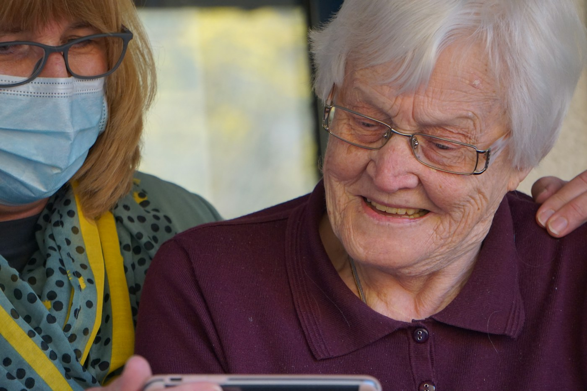

01
緊急與基層支援
01
緊急與基層支援



社區長者關懷
讓沒有人被遺忘
讓沒有人被遺忘
Why We Care
真正的支援，是讓人有尊嚴地走下去。
我們相信，健康不只是沒有疾病，而是有能力照顧自己、有選擇地生活，並在困難時知道有人願意伸出手。協會由醫護、社工、運動員、科研及項目管理人員組成，讓每一份援助都既專業，也溫暖。
- 以家庭為單位，理解每個難關背後的連鎖影響。
- 跨界別評估與跟進，讓資源真正送到有需要的人手上。
- 恪守《稅務條例》第 88 條慈善機構的問責與透明原則。